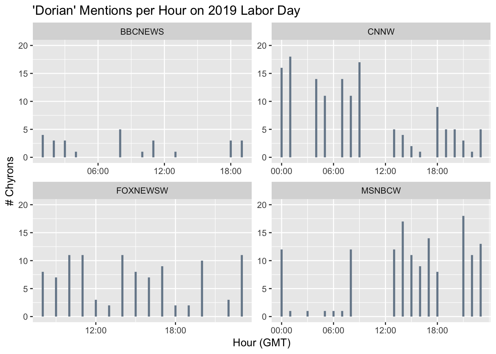
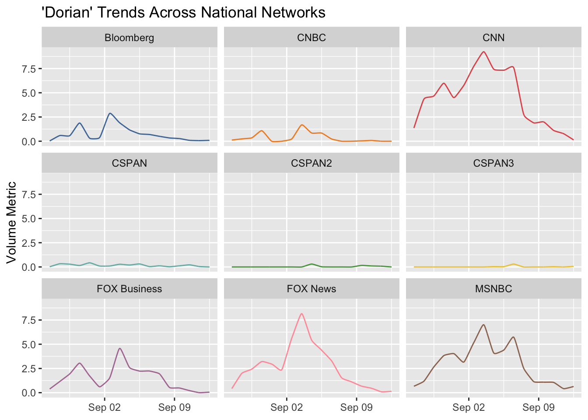
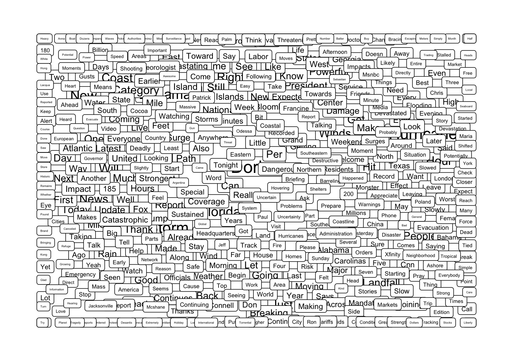

The ‘newsflash’ package is something I played with back in 2017 during Hurricane Irma. Having recently been under watch for Dorian, I’m revisiting it to visualize it’s news coverage.
# Set CRAN Mirror
options(repos = c(CRAN = "http://cran.rstudio.com"))
# Set time zone
options(tz="America/New_York")
# Newsflash documentation
# https://github.com/hrbrmstr/newsflash
# Install packages
# devtools::install_github("hrbrmstr/newsflash")
# install.packages("tidyverse")
# install.packages("ggalt")
# install.packages("brbrthemes")
# install.packages("anytime")
# Load libraries
library(newsflash)## NOTE: There are breaking changes to the package API due to GDELT's v2 APIlibrary(tidyverse)## ── Attaching packages ───────────────────────────────────────── tidyverse 1.2.1 ──## ✔ ggplot2 3.0.0 ✔ purrr 0.2.5
## ✔ tibble 1.4.2 ✔ dplyr 0.7.6
## ✔ tidyr 0.8.1 ✔ stringr 1.3.1
## ✔ readr 1.1.1 ✔ forcats 0.3.0## ── Conflicts ──────────────────────────────────────────── tidyverse_conflicts() ──
## ✖ dplyr::filter() masks stats::filter()
## ✖ dplyr::lag() masks stats::lag()library(ggalt)
library(hrbrthemes)## NOTE: Either Arial Narrow or Roboto Condensed fonts are *required* to use these themes.## Please use hrbrthemes::import_roboto_condensed() to install Roboto Condensed and## if Arial Narrow is not on your system, please see http://bit.ly/arialnarrowlibrary(anytime) # Get errors without this## Warning: package 'anytime' was built under R version 3.5.2Let’s look at Chryons before we examine network TV.
# Look at chryons (captioning)
ch <- read_chyrons("2019-09-02")
head(ch)## # A tibble: 6 x 5
## ts channel duration details text
## <dttm> <chr> <int> <chr> <chr>
## 1 2019-09-02 00:00:00 MSNBCW 20 MSNBCW_20190901_… "NATIONAL HURRIC…
## 2 2019-09-02 00:01:00 CNNW 59 CNNW_20190902_00… HURRICANE DORIAN…
## 3 2019-09-02 00:02:00 MSNBCW 30 MSNBCW_20190901_… NEW UPDATE ON HU…
## 4 2019-09-02 00:03:00 CNNW 45 CNNW_20190902_00… "HURRICANE DORIA…
## 5 2019-09-02 00:04:00 CNNW 62 CNNW_20190902_00… HURRICANE WARNIN…
## 6 2019-09-02 00:04:00 MSNBCW 49 MSNBCW_20190901_… "NATIONAL HURRIC…Within the news on Labor Day, how often was Dorian mentioned? We’ll create a column just for that purpose.
# Examine where Dorian mentioned ("mention" column)
# Convert time to hourly chunks ("hour" column)
ch2 <- mutate(ch,
hour = lubridate::hour(ts),
text = tolower(text),
mention = grepl("dorian", text))
head(ch2)## # A tibble: 6 x 7
## ts channel duration details text hour mention
## <dttm> <chr> <int> <chr> <chr> <int> <lgl>
## 1 2019-09-02 00:00:00 MSNBCW 20 MSNBCW_201… "nationa… 0 TRUE
## 2 2019-09-02 00:01:00 CNNW 59 CNNW_20190… hurrican… 0 TRUE
## 3 2019-09-02 00:02:00 MSNBCW 30 MSNBCW_201… new upda… 0 TRUE
## 4 2019-09-02 00:03:00 CNNW 45 CNNW_20190… "hurrica… 0 TRUE
## 5 2019-09-02 00:04:00 CNNW 62 CNNW_20190… hurrican… 0 FALSE
## 6 2019-09-02 00:04:00 MSNBCW 49 MSNBCW_201… "nationa… 0 TRUENow, let’s visualize this to see how it trended throughout the day.
ch2 %>% filter(mention) %>%
count(hour, channel) %>%
ggplot(aes(hour, n)) +
geom_segment(aes(xend=hour, yend=0),
color = "lightslategray", size=1) +
scale_x_continuous(name="Hour (GMT)", breaks=seq(0, 23, 6),
labels=sprintf("%02d:00", seq(0, 23, 6))) +
scale_y_continuous(name="# Chyrons", limits=c(0,20)) +
facet_wrap(~channel, scales="free") +
labs(title="'Dorian' Mentions per Hour on 2019 Labor Day") ## Warning: Removed 3 rows containing missing values (geom_segment).
Next, let’s examine networks. First, lets see a sample of what’s even available.
# How about networks?
ne <- list_networks(widget=FALSE)
head(ne,20)## # A tibble: 20 x 6
## StationID Description Market Network StartDate EndDate
## <chr> <chr> <chr> <chr> <date> <date>
## 1 ALJAZ Al Jazeera Internatio… ALJAZ 2017-09-11 2017-09-11
## 2 ALJAZAM Al Jazeera America NationalDi… ALJAZAM 2013-08-20 2013-08-20
## 3 BBCNEWS BBC News Internatio… BBCNEWS 2017-01-01 2017-01-01
## 4 BETW BET - San Francisc… San Franci… BET 2016-12-13 2016-12-13
## 5 BLOOMBERG Bloomberg National BLOOMB… 2013-12-05 2013-12-05
## 6 CNBC CNBC National CNBC 2009-07-02 2009-07-02
## 7 CNN CNN National CNN 2009-07-02 2009-07-02
## 8 COM Comedy Central NationalSp… COM 2011-05-10 2011-05-10
## 9 CSPAN CSPAN National CSPAN 2009-06-04 2009-06-04
## 10 CSPAN2 CSPAN2 National CSPAN 2009-06-04 2009-06-04
## 11 CSPAN3 CSPAN3 National CSPAN 2012-01-26 2012-01-26
## 12 CURRENT CurrentTV - San Fr… San Franci… Curren… 2012-01-13 2012-01-13
## 13 DW DeutscheWelle Internatio… DW 2017-09-19 2017-09-19
## 14 FBC FOX Business National FBC 2012-08-20 2012-08-20
## 15 FOXNEWS FOX News National FOXNEWS 2009-07-02 2009-07-02
## 16 HLN HLN - Maryland (HL… Maryland HLN 2009-07-02 2009-07-02
## 17 KBCW CW - San Francisco… San Franci… CW 2010-07-16 2010-07-16
## 18 KCAU ABC - Sioux City (… Sioux City ABC 2015-10-13 2015-10-13
## 19 KCCI CBS - Des Moines (… Des Moines CBS 2015-10-14 2015-10-14
## 20 KCNC CBS - Denver (KCNC) Denver CBS 2016-01-01 2016-01-01Similar to our chryon analysis, let’s plot mentions over time. Let’s look at news coverage across a three week period instead.
# Query Dorian data
# Primary term = Dorian
# Secondary term = Hurricane
# Starting just before Labor Day weekend
# https://rdrr.io/github/hrbrmstr/newsflash/man/query_tv.html
dorian <- query_tv("Dorian", mode = "TimelineVol",
start_date = "2019-08-27", end_date = "2019-09-12")
head(dorian)## # A tibble: 6 x 3
## network date value
## <chr> <dttm> <dbl>
## 1 Bloomberg 2019-08-27 12:00:00 0.0301
## 2 Bloomberg 2019-08-28 12:00:00 0.580
## 3 Bloomberg 2019-08-29 12:00:00 0.573
## 4 Bloomberg 2019-08-30 12:00:00 1.87
## 5 Bloomberg 2019-08-31 12:00:00 0.314
## 6 Bloomberg 2019-09-01 12:00:00 0.386Let’s plot this, breaking up the different networks into individual facets.
# Visualize network coverage over 3 weeks
# Themes causing errors, so commenting out parts
# https://github.com/hrbrmstr/hrbrthemes
query_tv('Dorian', mode = "TimelineVol",
start_date = "2019-08-27", end_date = "2019-09-12") %>%
arrange(date) %>%
ggplot(aes(date, value, group=network)) +
ggalt::geom_xspline(aes(color=network)) +
ggthemes::scale_color_tableau(name=NULL) +
labs(x=NULL, y="Volume Metric",
title="'Dorian' Trends Across National Networks") +
facet_wrap(~network) +
# theme_ipsum_rc(grid="XY") +
theme(legend.position="none") 
We see that coverage built up, was significant for a while, and then quickly dropped off.
Another way the ‘newsflash’ package allows us to examine this topic is via a word cloud. When Dorian was mentioned, what else was said?
# What are the top words associated with Dorian?
# Let's do a word cloud
wc <- query_tv('Dorian', mode = "WordCloud",
start_date = "2019-09-01", end_date = "2019-09-03")
head(wc)## # A tibble: 6 x 2
## label count
## <chr> <dbl>
## 1 Dorian 100
## 2 Hurricane 71.2
## 3 Storm 59.1
## 4 Bahamas 41.5
## 5 Now 35.3
## 6 Florida 35.0Next, let’s plot this!
ggplot(wc, aes(x=1, y=1)) +
ggrepel::geom_label_repel(aes(label=label, size=count), segment.colour="#00000000", segment.size=0) +
scale_size_continuous(trans="sqrt") +
labs(x=NULL, y=NULL) +
theme_ipsum_rc(grid="") +
theme(axis.text=element_blank()) +
theme(legend.position="none") 
This isn’t my favorite word cloud viz, but it gets the job done.
[THE END]